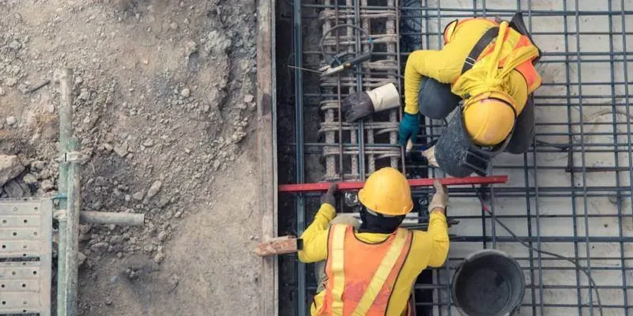

Baltimore’s diverse urban fabric—from historic row homes along the Inner Harbor to expanding commercial corridors—demands geotechnical insight rooted in local ground conditions. Our firm provides comprehensive site characterization, foundation design, and construction monitoring tailored to the Chesapeake Bay region. By integrating subsurface investigation with code-compliant analysis, we help clients navigate Baltimore’s complex geology while optimizing project performance. Whether assessing brownfield redevelopment or supporting new infrastructure, our team delivers reliable data and practical recommendations. Explore how our flat dilatometer testing informs soil behavior, and learn how soil mechanics study supports foundation decisions across the metro area.

Method and coverage
Regional considerations
Our team brings consolidated regional experience across Baltimore’s varied geologic provinces, from Piedmont residuum to Coastal Plain sediments. We operate a calibrated laboratory with triaxial, consolidation, and direct shear equipment, ensuring data reliability for every project. Our engineers are well-versed in Baltimore City and Baltimore County code requirements, coordinating seamlessly with local contractors, structural engineers, and permitting authorities. By combining site-specific investigation with practical foundation solutions, we help clients avoid costly surprises and maintain project schedules. Whether supporting waterfront developments or urban infill, our work reflects a deep commitment to quality and local knowledge.
Process video
Standards that apply
All geotechnical work in Baltimore follows U.S. standards to ensure safety and regulatory compliance. Subsurface explorations adhere to ASTM D1586 for Standard Penetration Tests (SPT) and ASTM D2487 for soil classification. Foundation designs reference ASCE 7-22 for seismic and wind loads, while shallow and deep foundation capacities are evaluated per ACI 318-19 and IBC 2021. Laboratory testing follows ASTM D2850 for unconsolidated-undrained triaxial strength and ASTM D2435 for consolidation. Environmental geotechnical work aligns with ASTM E1527 for Phase I ESAs. These standards, combined with local building code amendments, provide a rigorous framework for every project.
Common questions
What typical soil conditions are encountered in Baltimore for residential projects?
In the Piedmont region, you often find residual soils like sandy silts and micaceous clays over weathered rock, which can be suitable for shallow foundations if properly compacted. In Coastal Plain areas near the harbor, softer clays, organic silts, and loose sands are common, often requiring deeper foundations or ground improvement. Groundwater is typically shallow in these areas, so dewatering and waterproofing are important considerations. A thorough subsurface investigation is essential to determine the specific conditions on your lot.
How does the transition from Piedmont to Coastal Plain geology affect foundation design in Baltimore?
The geologic transition creates variable bearing capacities and settlement potentials. On the Piedmont side, weathered rock may provide good support at shallow depths, but residual soils can be sensitive to moisture changes. In the Coastal Plain, deep sand and clay layers require careful evaluation of compressibility and groundwater control. Differential settlement is a key concern when structures span both provinces or when soft organic layers are present. Our geotechnical reports include site-specific recommendations to address these variations.
What environmental regulations apply to geotechnical work in Baltimore?
Projects in Baltimore must comply with the Maryland Department of the Environment (MDE) regulations for sediment and erosion control, stormwater management, and potentially for brownfield redevelopment. Phase I Environmental Site Assessments follow ASTM E1527, and if contamination is suspected, Phase II investigations with soil and groundwater sampling are required. The city also enforces the Baltimore City Building Code, which references IBC and local amendments for foundation design and excavation safety.
Are there specific challenges for waterfront developments along the Patapsco River or Inner Harbor?
Yes, waterfront sites often have deep deposits of soft organic clays and silts with high compressibility, requiring pile foundations or ground improvement techniques like stone columns. The high water table and potential for tidal fluctuations necessitate solid dewatering plans and waterproofing. Historical fill materials may also be present, complicating foundation design and requiring careful compaction or removal. Additionally, erosion and scour considerations are critical for structures near the shoreline.